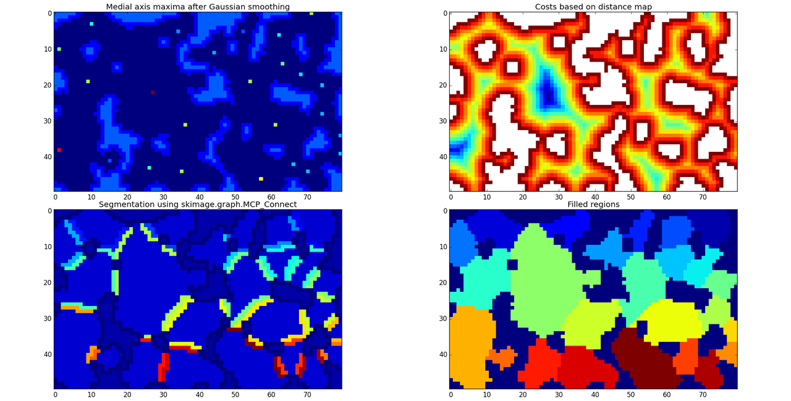
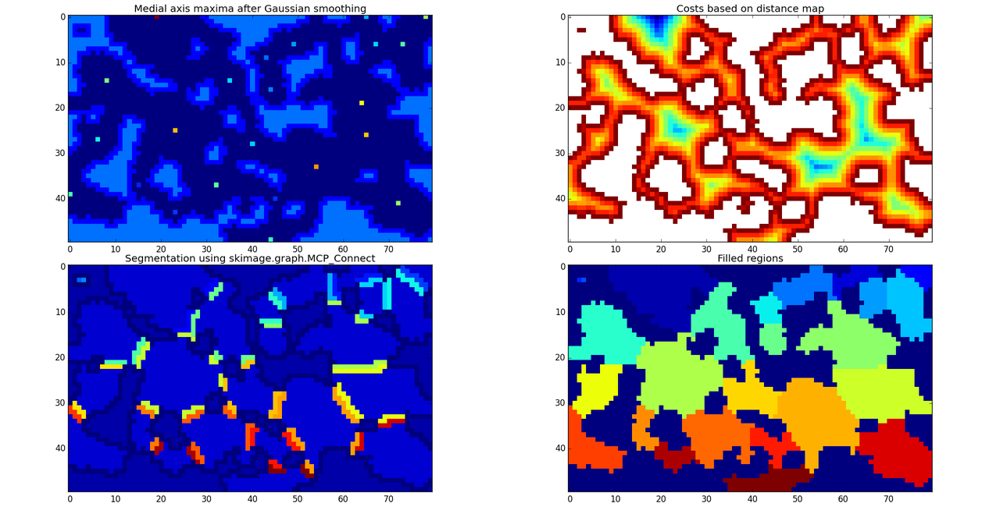
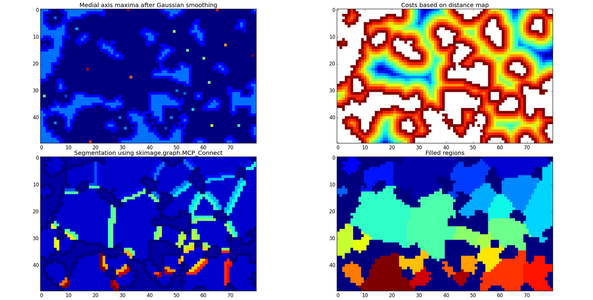

Segmentation Progress
I managed to make some progress with map segmentation. I've been working with the scikit-image graph module, which has a fast implementation of Dijkstra's algorithm on numpy arrays. I've had it in mind since I saw this post a couple of weeks ago:
It took me a long time to figure out how to use it properly. I even took to reading and modifying the source code to get the results I expected, which was complicated by the fact that it's written with Cython. I ended up removing the Cython declarations and using it as a Python module so I could follow the internal state, and eventually found the right inputs to use for it to work without modification.
